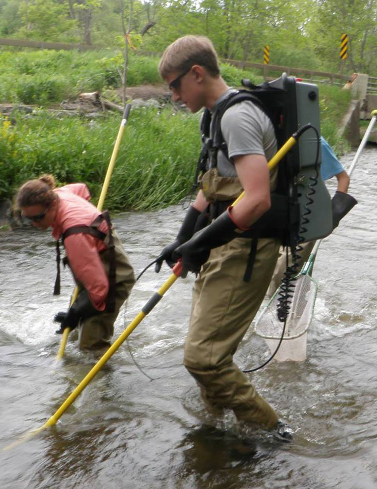

Past Projects
Boat electrofishing effort metrics
Boat electrofishing is often used to obtain an index of abundance known as catch-per-unit-effort (CPUE). However, the “effort” part of CPUE is poorly defined. Early sampling guidelines suggested recording effort in both time (e.g. seconds fished) and space (shoreline distance), checking both measures for bias, and then using the least-biased metric (Reynolds 1983). Later works have gone so far as to say that time-based measures are inherently biased due to the potential for gear saturation (Bayley and Austen 2002). Despite these cautions, time-based measures of effort remain widely used.
Issues with boat electrofishing CPUE arise due to “handling time”, i.e. the time necessary to capture each fish. Many survey methods such as gill nets or trawls aren’t affected by handling time – any number of fish can be caught simultaneously as long as the gear can physically accommodate them. However, boat electrofishing works more like hook-and-line angling where some measure of time and attention must be devoted to each individual fish. When effort is defined in terms of time, this has the effect of either adding more time (if survey speeds are varied in order to net all stunned fish) or causing fish to be missed (if survey speeds are kept constant). Spatial measures of effort, on the other hand, can better accommodate variable boat speeds and produce an unbiased CPUE metric. This can clearly be seen in the simulation below, which shows the effect of handling time on the performance of three separate metric-strategy combinations along a range of potential densities:
Our study further explores this dynamic and tests three different measures of effort: time fished, shoreline distance fished, and an innovative “area fished” measure derived from a custom-built GPS tracker. Results clearly indicate that time-based measures of effort have the potential to be biased at high catch densities whereas spatial metrics are uninfluenced by handling time-related saturation. More information can be found in the published manuscript or by watching my presentation at the 2019 NYAFS annual meeting.
Seasonal habitat use by round goby
Round goby are one of the fastest spreading introduced fish species in North America and are especially a cause for concern within the Great Lakes drainage basin. However, their seasonal patterns of habitat usage in these new systems have not been thoroughly studied. We used video surveys combined with novel statistical approaches (N-mixture hierarchical species distribution models) to assess seasonal biomass along a depth gradient. Our results suggest that goby habitat usage varies drastically between seasons – inhabiting a narrow, shallow band during summertime and transitioning to a deep and widely dispersed distribution for the winter months. The results from this project have been published in Freshwater Biology.
New York Catch Rate Orient Trout Stocking Model (CROTS)
 Stocking fish is a common method of enhancing the perceived recreational value of a fishery. In New York, the State Department of Environmental Conservation stocks approximately 2.3 million catchable-size trout every year. These hatchery-raised fish augment wild populations with the goal of improving fishing opportunities. Decisions on where, when, and what to stock are made using a population dynamics model that simulates the abundance of stocked fish throughout the angling season.
My work focused on creating and improving New York’s model, which had originally been created in the early 1980’s. While the basic structure remained valid, many of the parameters relating to angler behavior (e.g. rates for release, poaching, etc.), as well as natural causes of mortality had changed over the intervening decades. To address these changes, I worked with a group of biologists and managers from across the state to re-estimate and update the model parameters and structure. We accomplished this by conducting a multi-year study of trout waters across the state, employing both biological surveys (e.g. multi-pass electrofishing) and creel surveys to evaluate the present state of New York’s stream trout fisheries. I then used this information to re-estimate parameters and test alternative model structures using AD-modelbuilder, an open-source software package for non-linear statistical modeling. Ultimately, the results of this work were submitted as a report and have led to the creation of a new inland trout stocking plan.
Measurement error in angler creel surveys
Estimates of angler catch rates are critical to evaluating the success of management efforts such as habitat restoration and stocking. These catch rates are often estimated creel surveys or catch cards, where anglers are asked to provide information about their catch and effort. The catch rates calculated from these responses are then used to estimate a mean catch rate, plus or minus some degree of uncertainty as to the true catch rate. However, this approach ignores the fact that imperfect measurement during data collection may also contribute error to this estimate. Anglers may misremember the true amount of time spent fishing, misidentify species, or inaccurately estimate sizes. Standard estimation techniques such as Ordinary Least Squares Regression do not account for this measurement error. In addition, controversy exists over whether to use the “mean-of-ratios” (i.e. calculate all individual catch rates and then take the mean) or the “ratio-of-means” (i.e. calculate the mean catch and the mean effort, then take the ratio of those). We tested the performance of both estimators along with four separate regression methods and found that results from regression methods which took measurement error into account (i.e. “model II” regression) were less-biased. Our results also supported using the “ratio-of-means” estimator for complete trips (e.g. catch cards) and the “mean-of-ratios” estimator for incomplete trips. The full article can be found here.
Sex-specific modeling of summer flounder stocks
Summer flounder (also known as fluke) are a commercially and recr important species of flatfish found along the East coast of the United States and Canada. Like many species, summer flounder are sexually dimorphic - females grow faster and to larger sizes - which can lead to unequal harvest between sexes. The model currently used by NOAA Fisheries does not incorporate sex-specific differences and therefore may yield biased population estimates. We worked to create a set of alternate models that incorporate sex, length, and age. This project was jointly funded by the Save the Summer Flounder Fishery Fund and the Science Center for Marine Fisheries.
Small-Scale PIT Tag Arrays
 Passive integrated transponder (PIT) tags are a commonly used technique
for identifying and tracking organisms as they are small,
cost-effective, and can operate indefinitely. These tiny tags take
advantage of the same technologies as the “chips” used to identify pets,
the push-button ignition systems that recognize when your car keys are
present, and the touchless locks used on buildings around the world.
Since the chip is powered by the magnetic field emitted from the reader,
it can remain active until it breaks down materially (a very, very long
time in the case of these glass-encapsulated tags).
Passive integrated transponder (PIT) tags are a commonly used technique
for identifying and tracking organisms as they are small,
cost-effective, and can operate indefinitely. These tiny tags take
advantage of the same technologies as the “chips” used to identify pets,
the push-button ignition systems that recognize when your car keys are
present, and the touchless locks used on buildings around the world.
Since the chip is powered by the magnetic field emitted from the reader,
it can remain active until it breaks down materially (a very, very long
time in the case of these glass-encapsulated tags).
There are two main detection techniques used in fisheries PIT tag research: permanent, stream-width detection arrays and portable backpack units. The former are very common and capable of identifying nearly all tagged organisms passing a particular point on a linear stream system but require significant infrastructure to install and maintain. Backpack detection units, on the other hand,are more suited to small streams and short-term work, but rely on labor-intensive manual surveys for tagged organisms that may be disruptive to fish behavior.
To complement these methods, I developed a technique using multiple, independent, small-scale PIT readers. An array of these readers is cost-effective and can collect data autonomously. The use of small pass-over antennas also allows for placement in nonlinear waterbodies, such as lakes and ponds, where travel direction cannot be assumed and pass-through antennas are therefore of limited utility. Such a system does not replace current methods but instead expands the utility of these widely used tags and creates new research opportunities. At present, this method has been used to assess brook trout spawning behavior in the Adirondacks and has been adopted by the New York State Department of Environmental Conservation to assess trout movement in the tailwaters of the Delaware River.